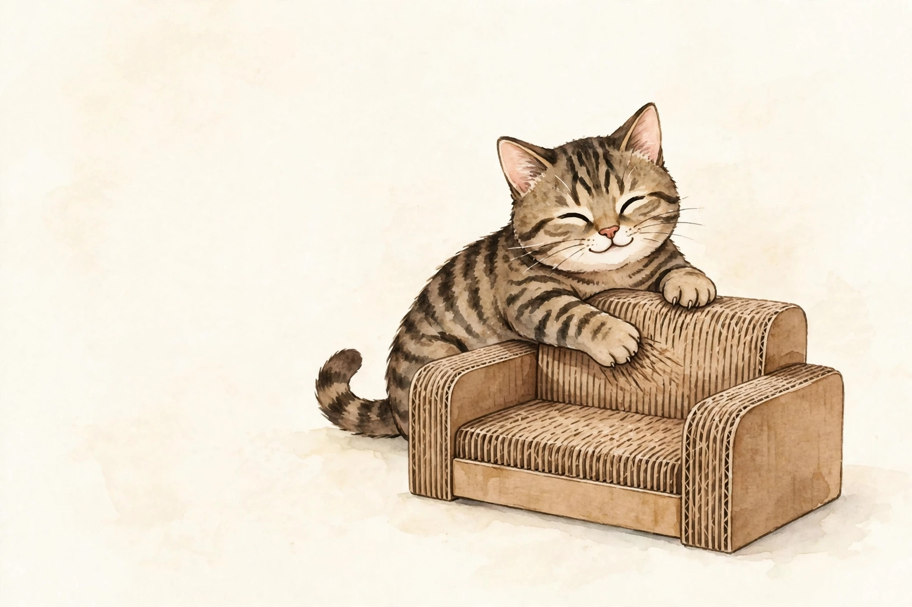

猫の爪とぎの置き場所と素材の選び方

爪とぎは、爪の古い層をはがすための猫の自然な行動で、縄張りのマーキングや、寝起きのストレッチの意味もあると言われます。やめさせるものではなく、研いでいい場所を用意するのが基本です。この記事は一般的な飼育・ケアの情報です。
置き場所のコツ
- 寝起きの場所の近く：猫は寝起きに爪を研ぐことが多いので、寝床のそばは使ってもらいやすい場所です
- 通り道：よく通る動線の途中に置くと、ついでに研いでもらえます
- 研がれて困る家具のそば：ソファなどで研がれてしまう場合は、その家具の近くに爪とぎを置くと移行しやすくなります
- 複数箇所に置くと、猫の選択肢が増えて家具への被害も減らしやすくなります
素材の種類
- 段ボール：軽くて交換しやすく、価格も手ごろ。くずが出やすいので掃除はこまめに
- 麻縄：ポールに巻いた縦型が多く、しっかりした研ぎ心地を好む猫に
- 木：丈夫で長持ちしやすい素材です
- カーペット地：絨毯で研ぐのが好きな猫に合うことがあります
好みは猫によって違うので、使ってくれないときは素材や形を変えてみるのが近道です。
形の違い：横置き型と縦型
横置き型は床に置いて研ぐタイプ、縦型（ポール型）は背伸びをして研ぐタイプです。壁や家具の高い位置で研ぎたがる猫には縦型、寝そべって研ぐ猫には横置き型が合うことがあります。縦型は、猫が背伸びをしても倒れない安定感のあるものを選んでください。
家具で研がせない工夫
- 研がれて困る家具にはカバーをかける、配置を変える
- 爪とぎを使ったらほめる。近くで研ぎ始めたら爪とぎへ誘導する
- またたびを爪とぎに軽く振って誘う方法もあります（与えすぎには注意し、反応が強い猫には使わないでください）
注意
- 爪とぎのくずや粉はこまめに掃除してください。段ボールは削れてきたら交換時期です。
- 精油（アロマオイル）は猫に使わないでください。香りの強いスプレーで家具から遠ざける方法は、猫のストレスになることがあるのでおすすめしません。
- 爪が肉球に食い込むほど伸びている、爪が欠けている・血が出ているといった場合は、動物病院に相談してください。
おすすめ用品（PR）
この記事のテーマに合わせて選んだ用品です。詳しくは販売ページでご確認ください。


※本記事の商品リンクは楽天アフィリエイトによる広告リンクです。価格や在庫は販売ページでご確認ください。
猫のLINEスタンプ
このサイトの運営者（222キャラ工房）が作っている、猫のLINEスタンプです。毎日の連絡にどうぞ。